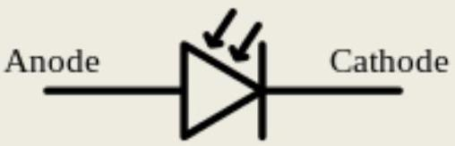
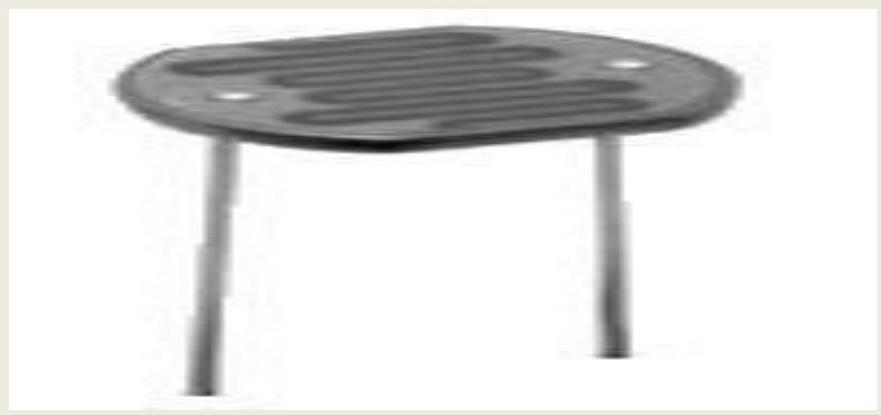
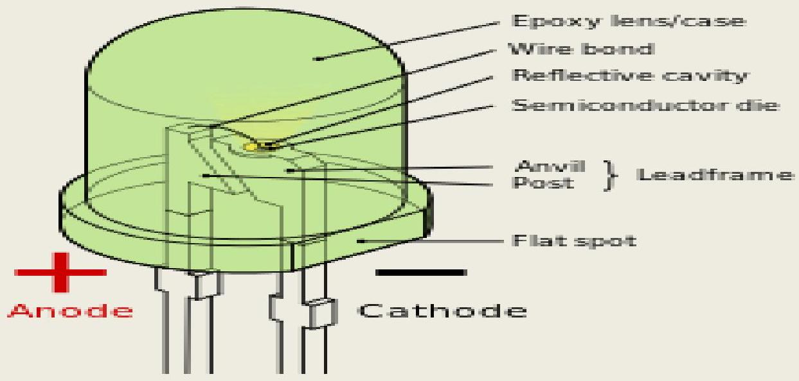
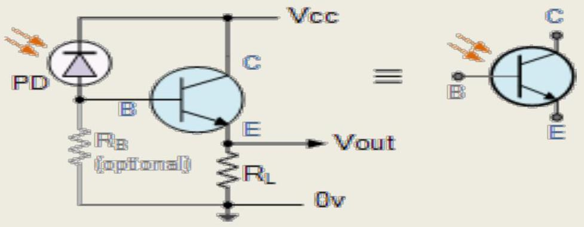
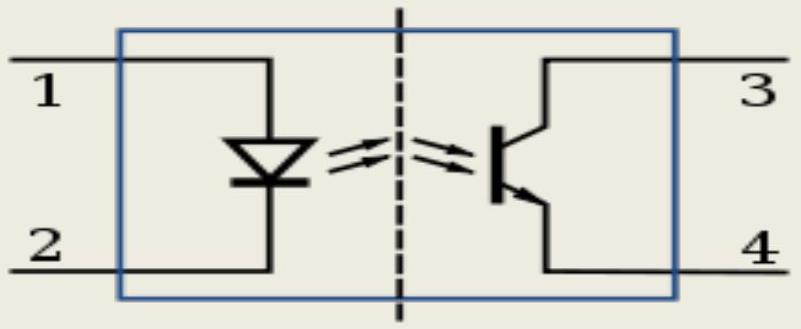

CHAPTER- 1. OPTO ELECTRONICS.
1.1 Define the concept of Photodiode:
A photodiode is a semiconductor device that converts light into current. The current is generated when photons are absorbed in the photodiode. A small amount of current is also produced when no light is present. Photodiodes may contain optical filters, builtin lenses, and may have large or small surface areas. Photodiodes usually have a slower response time as its surface area increases. The common, traditional solar cell used to generate electric solar power is a large area photodiode.
Photoconductivity cells and Photovoltaic cells. When used in zero bias or photovoltaic mode, the flow of photocurrent out of the device is restricted and a voltage builds up. This mode exploits the photovoltaic effect, which is the basis for solar cells - a traditional solar cell is just a large area photodiode.
Photoconductive mode: In this mode the diode is often reverse biased (with the cathode driven positive with respect to the anode). This reduces the response time because the additional reverse bias increases the width of the depletion layer, which decreases the junction's capacitance. The reverse bias also increases the dark current without much change in the photocurrent.
1.2 Define the concept of Light sensing Devices, Photo active Devices & Light Sensors.
Light Sensor : A Light Sensor generates an output signal indicating the intensity of light by measuring the radiant energy that exists in a very narrow range of frequencies basically called "light", and which ranges in frequency from "Infra-red" to "Visible" up to "Ultraviolet" light spectrum.
The Light Sensor is a passive devices that convert this "light energy" whether visible or in the infra-red parts of the spectrum into an electrical signal output. Light sensors are more commonly known as "Photoelectric Devices" or "Photo Sensors" because the convert light energy (photons) into electricity (electrons).
1.3 Explain construction & working of LDR, LED, LCD, Phototransistor, Infrared transmitter and receiver.
Light Dependent Resistor:
Typical LDR
As its name implies, the Light Dependent Resistor (LDR) is made from a piece of exposed semiconductor material such as cadmium sulphide that changes its electrical resistance from several thousand Ohms in the dark to only a few hundred Ohms when light falls upon it by creating hole-electron pairs in the material.
Light-Emitting Diode (LED):
A light-emitting diode (LED) is a two-lead semiconductor light source. It is a pn-junction diode, which emits light when activated. When a suitable voltage is applied to the leads, electrons are able to recombine with electron holes within the device, releasing energy in the form of photons. This effect is called electroluminescence, and the color of the light (corresponding to the energy of the photon) is determined by the energy band gap of the semiconductor.
Liquid-Crystal Display (LCD):
A liquid-crystal display (LCD) is a flat panel display, electronic visual display, or video display that uses the light modulating properties of liquid crystals. Liquid crystals do not emit light directly.
LCDs are available to display arbitrary images (as in a general-purpose computer display) or fixed images which can be displayed or hidden, such as preset words, digits, and 7-segment displays as in a digital clock. They use the same basic technology, except that arbitrary images are made up of a large number of small pixels, while other displays have larger elements.
The Phototransistor:
Photo-transistor
A Phototransistor which is basically a photodiode with amplification. The Phototransistor light sensor has its collector-base PN-junction reverse biased exposing it to the radiant light source.
Infrared (IR) is invisible radiant energy, electromagnetic radiation with longer wavelengths than those of visible light, extending from the nominal red edge of the visible spectrum at 700 nanometers.
1.4 Explain Opto-isolator & optical sensors.
Opto-isolator:
It is a device that uses light to couple a signal from its input to its output. The LED is on the left & the photo diode is on the right. Here the output from LED circuit is coupled via light to the photodiode circuit.
Schematic diagram of an opto-isolator showing source of light (LED) on the left, dielectric barrier in the center, and sensor (phototransistor) on the right.
Optical Sensor:
A fiber optic sensor is a sensor that uses optical fiber either as the sensing element ("intrinsic sensors"), or as a means of relaying signals from a remote sensor to the electronics that process the signals ("extrinsic sensors"). Fibers have many uses in remote sensing.
1.5 What is Laser and basic light theory & Laser theory .
A laser is a device that emits light through a process of optical amplification based on the stimulated emission of electromagnetic radiation. The term "laser" originated as an acronym for "light amplification by stimulated emission of radiation". A laser differs from other sources of light because it emits light coherently. Semiconductor lasers or laser diodes play an important part in our everyday lives by providing cheap and compact-size lasers. They consist of complex multi-layer structures requiring nanometer scale accuracy and an elaborate design. Their theoretical description is important not only from a fundamental point of view, but also in order to generate new and improved designs.
1.6 Describe working of Laser Diodes
A laser diode, or LD, is an electrically pumped semiconductor laser in which the active medium is formed by a p-n junction of a semiconductor diode similar to that found in a light-emitting diode.A laser diode is electrically a P-i-n diode. The active region of the laser diode is in the intrinsic (I) region, and the carriers, electrons and holes, are pumped into it from the N and P regions respectively. While initial diode laser research was conducted on simple P N diodes, all modern lasers use the double-hetero structure implementation, where the carriers and the photons are confined in order to maximize their chances for recombination and light generation. Unlike a regular diode used in electronics, the goal for a laser diode is that all carriers recombine in the I region, and produce light. Thus, laser diodes are fabricated using direct band gap semiconductors. The laser diode epitaxial structure is grown using one of the crystal growth techniques, usually starting from an $N$ doped substrate, and growing the I doped active layer, followed by the P doped cladding, and a contact layer. The active layer most often consists of quantum wells, which provide lower threshold current and higher efficiency.